Step 1
上傳來源報表並確認解析成功
- 在上傳區放入 ESP 匯出的施工報表。
- 確認畫面已載入資料列與欄位數。
- 先看是否有明顯異常（例如筆數明顯不對）。
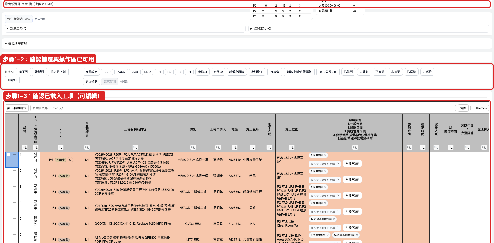
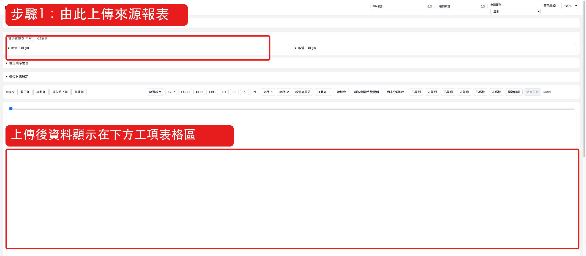

篩選按鈕可同時開多個，邏輯為交集（同一列需同時滿足所有啟用條件）。
| 按鈕 / 群組 | 預設篩選條件（依工具程式） |
|---|---|
| 篩選設定 | 可編輯 ISEP / PUSD / CCD / EBO 等群組關鍵字清單，改完後按鈕即套用新規則。 |
| ISEP | 課別符合 ISEP 群組值（預設：F20ISEP1；可在「篩選設定」調整）。 |
| PUSD | 課別符合 PUSD 群組值（預設：PUSD 廠區服務一課；可調整）。 |
| CCD | 課別符合 CCD 群組清單（資料中心相關課別，清單可調整）。 |
| EBO | 課別符合 EBO 群組清單（EBO Clean / Process / Repair…，清單可調整）。 |
| P1 / P2 / P3 / P4 | Phase(Site) 文字包含對應碼；例如 Outsite,P1 也會命中 P1。 |
| 廠務L1 | 高風險作業 欄位包含 L1。 |
| 廠務L2 | 高風險作業 欄位包含 L2。 |
| 設備高風險 | 高風險作業 欄位包含 設備高風險。 |
| 夜間施工 | 簽退時間命中 18:30~23:59 或 00:00~00:30；簽退空值也納入。 |
| 待檢查 | 優先抓黃底旗標（ISEP/Site/申請類別）；若旗標欄不存在，退回即時計算規則。 |
| 消防中斷/火警隔離 | 申請類別命中消防中斷/火警隔離（含代碼 8/10）或欄位值為 V。 |
| 尚未分類Site | Phase 非單獨 P1/P2/P3/P4（空值、多值、Outsite 皆視為未分類）。 |
| 已簽到 / 未簽到 | 簽到時間 有值 / 空值。 |
| 已簽退 / 未簽退 | 簽退時間 有值 / 空值。 |
| 已巡檢 / 未巡檢 | 巡檢人員 有值且非 NA / 空值或 NA。 |
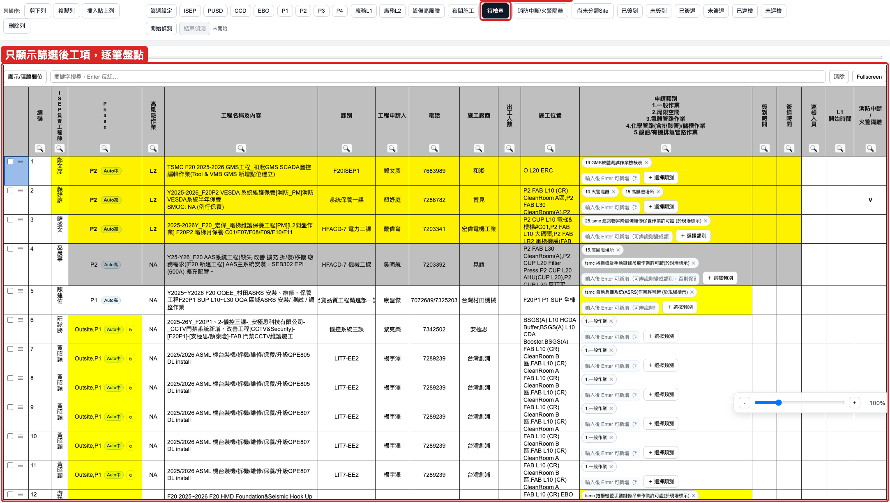
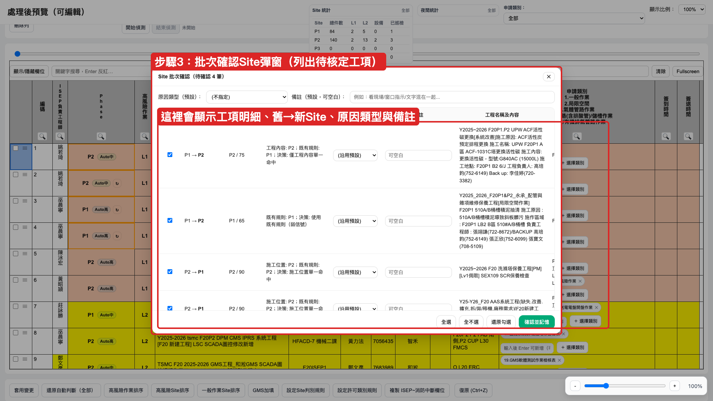
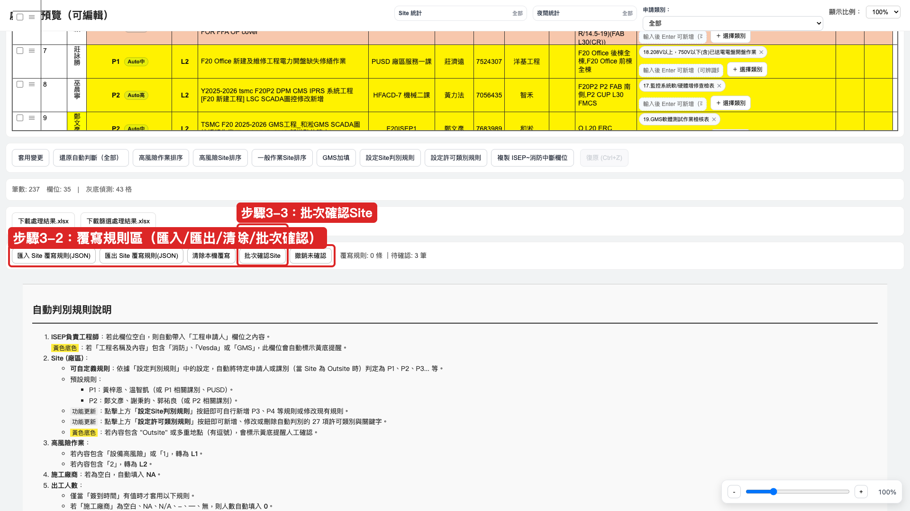
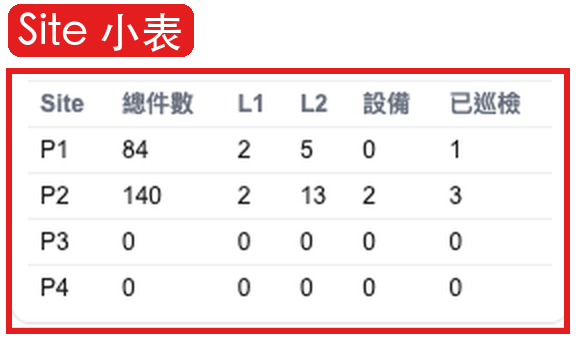
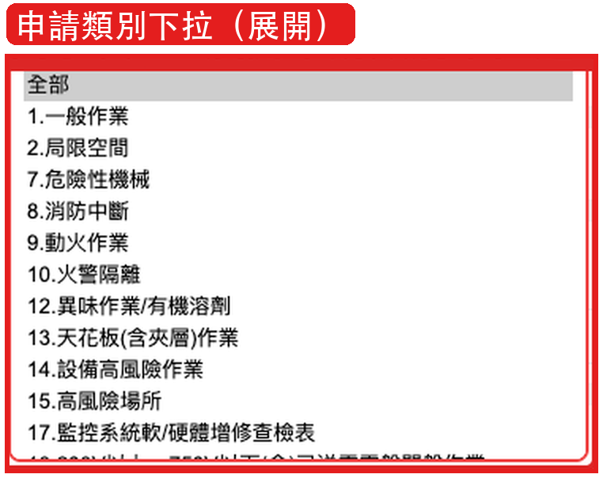
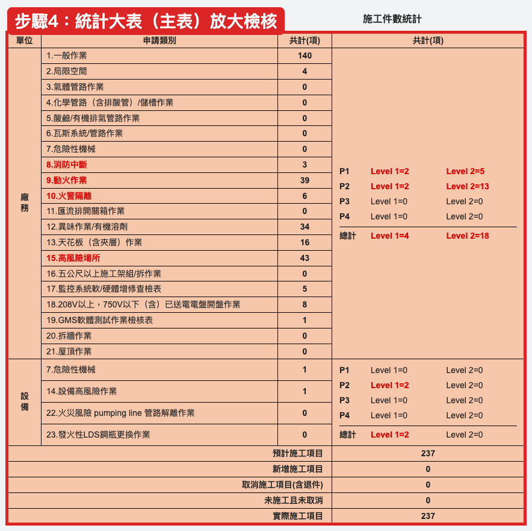
下載處理結果.xlsx 當完整備份。下載篩選處理結果.xlsx。複製 ISEP~消防中斷欄位，並搭配下方統計大表件數一起貼回。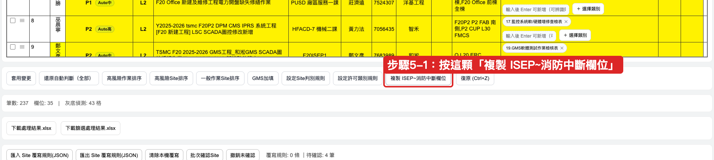
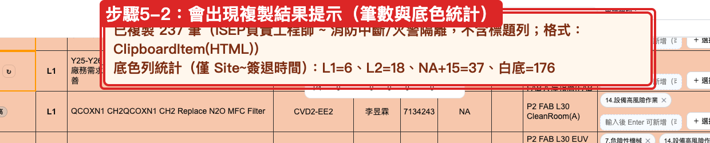
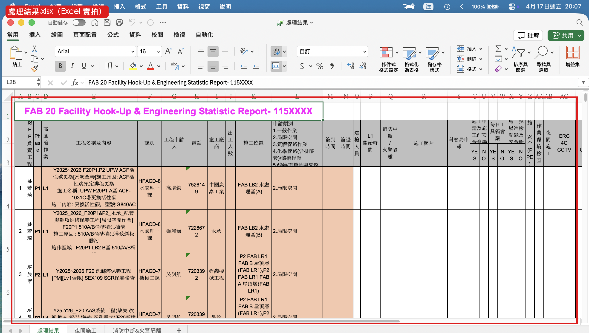
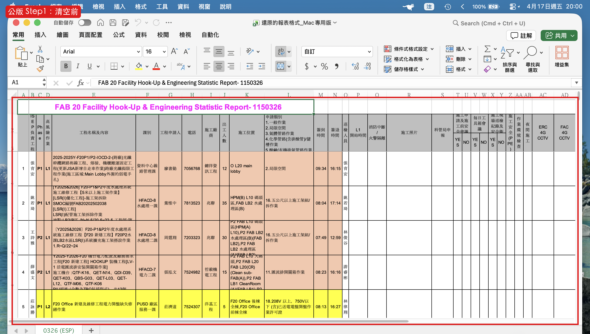
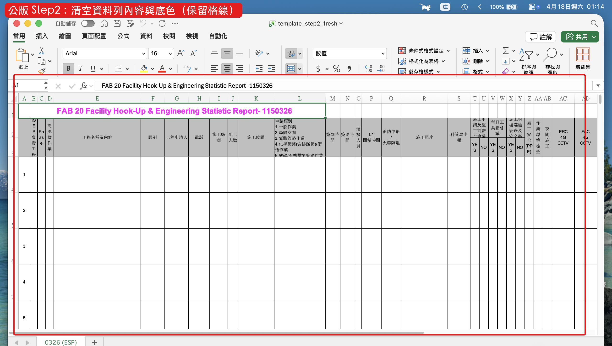
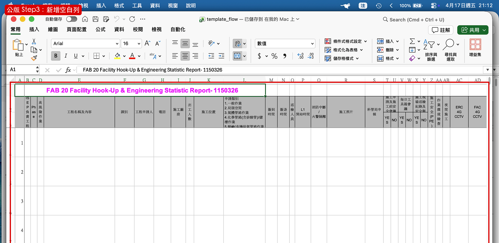
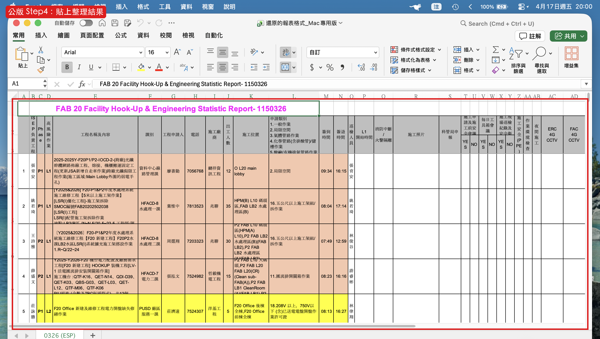
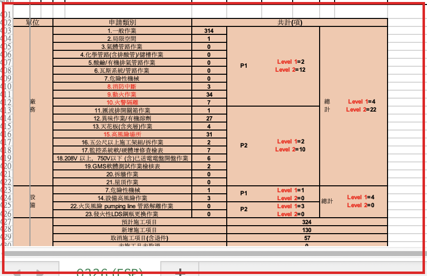
你網頁整理好的資料列底色邏輯，需與公版報表保持一致，貼回時連同底色一起貼。
以上兩項仍可作為特殊情境備用，但不是你目前每天必做步驟。
本文件可直接列印成 PDF；每次工具規則調整後，建議同步更新這份 SOP。